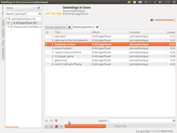

Exaile
Dieser Artikel wurde für die folgenden Ubuntu-Versionen getestet:
Ubuntu 14.04 Trusty Tahr
Zum Verständnis dieses Artikels sind folgende Seiten hilfreich:

Exaile  ist ein Audioplayer, der auf der Bibliothek GTK+ aufsetzt und in Python geschrieben ist. Für das Abspielen der Audio-Codecs werden die GStreamer-Bibliotheken verwendet. Exaile ähnelt im Aufbau dem Programm Amarok. Es gibt viele interessante Plugins, die den Player sinnvoll erweitern. Einige besondere Features werden im folgenden vorgestellt:
ist ein Audioplayer, der auf der Bibliothek GTK+ aufsetzt und in Python geschrieben ist. Für das Abspielen der Audio-Codecs werden die GStreamer-Bibliotheken verwendet. Exaile ähnelt im Aufbau dem Programm Amarok. Es gibt viele interessante Plugins, die den Player sinnvoll erweitern. Einige besondere Features werden im folgenden vorgestellt:
CD-Cover anzeigen/herunterladen
Liedtexte und Tabulaturen herunterladen
Anzeige mehrerer Playlists in Tabs
Radiostreams abspielen und aufnehmen
Abonnieren und herunterladen von Podcasts
Automatische Erkennung von CDs und Mediaplayern
Unterstützung von LastFM
Hinweis:
Installation¶
Exaile lässt sich bis einschließlich Ubuntu 15.10 aus den offiziellen Paketquellen installieren [1]:
exaile (universe)
gstreamer0.10-plugins-ugly (universe, für MP3-Unterstützung)
 mit apturl
mit apturl
Paketliste zum Kopieren:
sudo apt-get install exaile gstreamer0.10-plugins-ugly
sudo aptitude install exaile gstreamer0.10-plugins-ugly
PPA¶
Die aktuellste Version kann über ein "Personal Packages Archiv" (PPA) [2] bezogen werden. In diesem PPA sind zahlreiche weitere Multimedia-Programme enthalten. Um Problemen mit den offiziellen Paketquellen vorzubeugen, wird empfohlen, das PPA nach der Installation wieder zu deaktivieren oder Apt-Pinning zu nutzen.
Adresszeile zum Hinzufügen des PPAs:
ppa:nilarimogard/webupd8
Hinweis!
Zusätzliche Fremdquellen können das System gefährden.
Ein PPA unterstützt nicht zwangsläufig alle Ubuntu-Versionen. Weitere Informationen sind der  PPA-Beschreibung des Eigentümers/Teams nilarimogard zu entnehmen.
PPA-Beschreibung des Eigentümers/Teams nilarimogard zu entnehmen.
Damit Pakete aus dem PPA genutzt werden können, müssen die Paketquellen neu eingelesen werden.
Nach dem Aktualisieren der Paketquellen erfolgt die Installation über die Pakete:
exaile (ppa)
exaile-plugin-contextinfo (ppa)
exaile-plugin-ipod (ppa)
exaile-plugin-moodbar (ppa)
exfalso (universe)
mit apturl
Paketliste zum Kopieren:
sudo apt-get install exaile exaile-plugin-contextinfo exaile-plugin-ipod exaile-plugin-moodbar exfalso
sudo aptitude install exaile exaile-plugin-contextinfo exaile-plugin-ipod exaile-plugin-moodbar exfalso
Bedienung¶
Nach erfolgreicher Installation ist das Programm bei Ubuntu-Varianten mit einem Anwendungsmenü unter "Unterhaltungsmedien -> Exaile" zu finden [3].
Das Einstellungsmenü kann man im geöffneten Player über "Bearbeiten -> Einstellungen" erreichen oder mit einem Rechtsklick  auf das Panelsymbol starten.
auf das Panelsymbol starten.
Musiksammlung¶
Um die Musiksammlung zu verwalten, gibt es unter "Bearbeiten -> Bibliothek" die Möglichkeit, Ordner zur Liste hinzuzufügen bzw. zu entfernen. Die Sammlung kann anschließend mit "Werkzeuge -> Bibliothek neu einlesen" erneut eingelesen werden.
Blacklist¶
Ein Besonderheit stellt die Funktion dar, Dateien auf die schwarze Liste zu setzen. So markierte Dateien werden beim nächsten Einlesen der Musiksammlung ausgeschlossen. Um einzelne Stücke hinzuzufügen, führt man auf die gewünschte Datei einen Rechtsklick aus und wählt anschließend "Auf Blacklist setzen". Die schwarze Liste ist unter "Bearbeiten-> Blacklist" zu finden.
On-Screen Display¶
Es können individuelle Einstellungen am Design des On-Screen Display (OSD), das bei einem Liedwechsel Informationen über das aktuelle Stück auf dem Bildschirm anzeigt, vorgenommen werden.
Cover¶
Um Cover für die Sammlung herunterzuladen, geht man auf "Bearbeiten -> Cover". Nach einem Klick auf "Starten" lädt Exaile automatisch für alle Alben die Cover von Amazon herunter.
Hinweis:
Die folgende Anleitung funktioniert nur mit der alten Version 0.2.x.
Sollte man mit der Größe der im Playerfenster angezeigten Cover nicht zufrieden sein, kann diese auch manuell angepasst werden. Hierzu öffnet man die Datei /usr/share/exaile/xl/covers.py in einem Texteditor[4] mit Root-Rechten[5]. In der Zeile
COVER_WIDTH = 100
ist die Breite der Cover in Pixel festgelegt, die verändert werden kann. Um die Höhe des Bildes zu verändern, öffnet man die Datei /usr/share/exaile/exaile.glade in einem Texteditor mit Root-Rechten und sucht man die folgenden Zeilen und passt die angegebene Höhe der Cover an:
<widget class="GtkHBox" id="top_box"> <property name="height_request">100</property>
Nach einem Neustart von Exaile werden die Änderungen übernommen.
Bevor Dateien verändert werden, ist es ratsam, ein Backup anzulegen. Dieses Workaround funktioniert bisher nur ordnungsgemäß, wenn auch kein anderes Theme verwendet wird. Sofern keine Cover zur Verfügung stehen, wird das Bild aus /usr/share/exaile/images/nocover.png angezeigt.
ID3-Tags¶
Um die Tags von MP3-Dateien zu bearbeiten, führt man einen Rechtsklick auf den zu ändernden Titel aus und wählt "Tags bearbeiten". Nun öffnet sich der komfortable Tag-Editor, mit dem man die Tags einfach bearbeiten kann. Für umfangreiche Sammlungen empfiehlt es sich jedoch, das Programm Audio Tag Tool, EasyTAG oder ein anderes zu verwenden (siehe Multimedia).
Podcast¶
Um einen Podcast hinzuzufügen, unter den Reiter "Radio" gehen. Anschließend einen Rechtsklick auf "Podcast" ausführen und "Feed hinzufügen" auswählen. Zum Entfernen eines Podcast wählt man den Feed aus und entfernt ihn durch "Rechtsklick-> Feed löschen".
Radio¶
Das Programm bietet die Möglichkeit, Radiostreams abzuspielen. Um die Streams aufzunehmen, kann man das Programm Streamripper verwenden, das sich mit dem gleichnamigen Plugin direkt im Player integrieren lässt.
Plugins¶
Es gibt wie bei Amarok viele Plugins für das Programm, die Exaile sinnvoll erweitern. Um die Plugins zu konfigurieren, muss man im geöffneten Programm "Bearbeiten -> Plugins" anwählen oder einen Rechtsklick auf das Panelsymbol tätigen und dort den Punkt "Plugins" wählen. In der Plugin-Verwaltung werden die einzelnen Plugins übersichtlich, mit einer kurzen Beschreibung, dargestellt. Die Plugins lassen sich einfach installieren und konfigurieren. Im folgenden werden einige besonders interessante Plugins vorgestellt:
| Plugins | |
| Name | Beschreibung |
| Soundjuicer | Ermöglicht den Import von CDs mittels Sound Juicer |
| Streamripper | Ermöglicht die Aufzeichnung von Streams mittels Streamripper |
| AWN | Zeigt das CD-Cover, den Wiedergabestatus und/oder die verbleibende Zeit des aktuellen Albums in AWN an |
| Desktop-Cover | Zeigt das derzeitige CD-Cover auf dem Desktop an |
| Minimodus | Ein kompakter Minimodus für Exaile. Über die Tastenkombination Strg+Alt+M wird er ein- und ausgeschaltet. Bei deaktivierter Fensterdekoration kann das Fenster meist mit Hilfe der Alt-Taste verschoben werden. |
| Kontrolleistenbuttons | Fügt Buttons für „Wiedergabe/Pause“, „Vorheriges Stück“ und „Nächstes Stück“ der Kontrollleiste hinzu |
| Weckuhr | Spielt zu einer vorgegebenen Zeit Musik ab. Hinweis: Da Exaile zum vorgegebenen Zeitpunkt einfach den Inhalt der aktuellen Wiedergabeliste abspielt, sollte diese auch die gewünschten Stücke enthalten. |
| Moodbar | „Stimmung“ eines Lieds anzeigen lassen (benötigt Paket: exaile-plugin-moodbar) |
| Notify | Benutzt den LibNotify-Benachrichtigungsdienst, um den Beginn eines neuen Titels anzuzeigen |
| Kontextinformationen | Es werden verschiedene Informationen über den aktuellen Titel angezeigt (benötigt Paket: exaile-plugin-contextinfo) |
| iPod-Unterstützung | Anbindung an den iPod (benötigt Paket: exaile-plugin-ipod) |
| GNOME-Multimediatasten | Ermöglicht die Steuerung Exailes durch das Multimediatasten-System von GNOME. Kompatibel mit GNOME >= 2.20.x |
Unterstützung für Pidgin bei aktuellen Versionen¶
Seit kurzem scheint bei Exaile auch das Plugin "Aktuelles Stück" vorinstalliert zu sein. Dies ermöglicht Exaile, den aktuell abgespielten Titel im Pidgin-Status anzuzeigen.Dafür muss folgendes installiert werden:
pidgin-musictracker (universe)
mit apturl
Paketliste zum Kopieren:
sudo apt-get install pidgin-musictracker
sudo aptitude install pidgin-musictracker
Erstmal muss unter Pidgin das "Musiktracker"-Plugin aktiviert werden. Im Konfigurationsmenü sollte "Player Automatisch Erkennen" angezeigt werden. In Exaile muss man im Menü "Plugins" folgendes per Häkchen aktivieren:
Aktuelles Stück MPRIS
Nun sollten auch Pidgin-Kontakte den aktuell abgespielten Song angezeigt bekommen.
Tastenkürzel¶
| Tastenkürzel | |
| Taste(n) | Funktion |
| Strg + T | neue Wiedergabeliste |
| Strg + E | Informationen zum Künstler / zur Band aufrufen |
| Strg + L | Liedtexte abrufen |
| Strg + Alt + M | Minimodus (per Plugin möglich) |
| Strg + Q | Programm beenden |
Problembehebung¶
Links¶
Exaile is upgrading to GStreamer 1.x/GTK3
- Blogbeitrag, 05/2015
Exaile Web Display
 - Exaile-Plugin, um den aktuellen Titel anzuzeigen
- Exaile-Plugin, um den aktuellen Titel anzuzeigenAudioPlayer
 - Übersichtsartikel
- Übersichtsartikel
- Erstellt mit Inyoka
-
 2004 – 2017 ubuntuusers.de • Einige Rechte vorbehalten
2004 – 2017 ubuntuusers.de • Einige Rechte vorbehalten
Lizenz • Kontakt • Datenschutz • Impressum • Serverstatus -
Serverhousing gespendet von